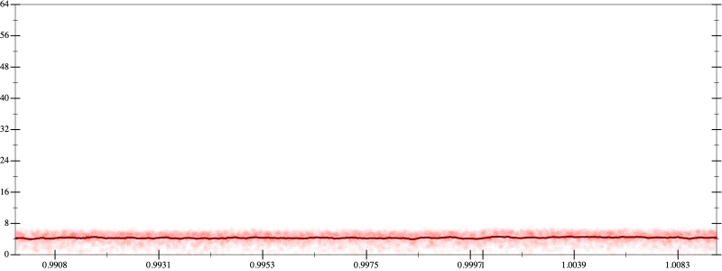
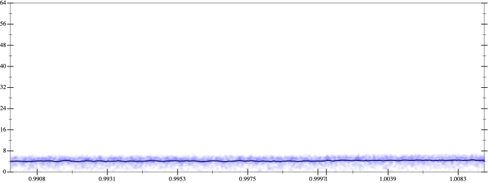
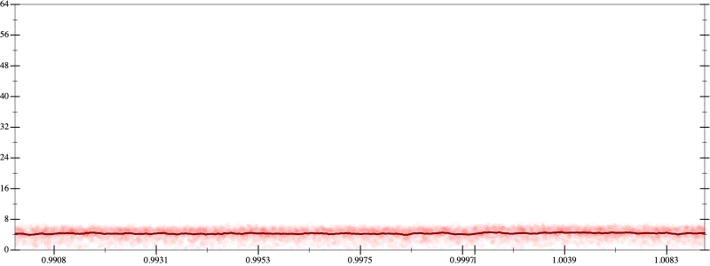
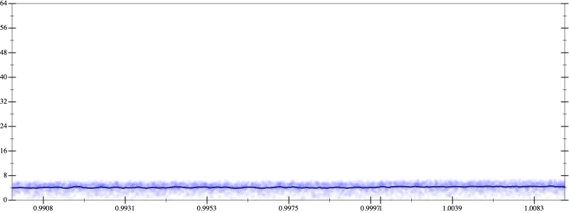

Initial program 4.3
\[\left(\left(\left(\left(\left(\left(\left(\left(1.0 + -10.0 \cdot x\right) + 22.5 \cdot \left(x \cdot x\right)\right) + -20.0 \cdot \left(\left(x \cdot x\right) \cdot x\right)\right) + 8.75 \cdot \left(\left(\left(x \cdot x\right) \cdot x\right) \cdot x\right)\right) + -2.1 \cdot \left(\left(\left(\left(x \cdot x\right) \cdot x\right) \cdot x\right) \cdot x\right)\right) + 0.291667 \cdot \left(\left(\left(\left(\left(x \cdot x\right) \cdot x\right) \cdot x\right) \cdot x\right) \cdot x\right)\right) + -0.02381 \cdot \left(\left(\left(\left(\left(\left(x \cdot x\right) \cdot x\right) \cdot x\right) \cdot x\right) \cdot x\right) \cdot x\right)\right) + 0.001116 \cdot \left(\left(\left(\left(\left(\left(\left(x \cdot x\right) \cdot x\right) \cdot x\right) \cdot x\right) \cdot x\right) \cdot x\right) \cdot x\right)\right) + -2.8 \cdot 10^{-05} \cdot \left(\left(\left(\left(\left(\left(\left(\left(x \cdot x\right) \cdot x\right) \cdot x\right) \cdot x\right) \cdot x\right) \cdot x\right) \cdot x\right) \cdot x\right)\]
- Using strategy
rm Applied associate-+l+4.3
\[\leadsto \left(\left(\left(\left(\left(\left(\color{blue}{\left(1.0 + \left(-10.0 \cdot x + 22.5 \cdot \left(x \cdot x\right)\right)\right)} + -20.0 \cdot \left(\left(x \cdot x\right) \cdot x\right)\right) + 8.75 \cdot \left(\left(\left(x \cdot x\right) \cdot x\right) \cdot x\right)\right) + -2.1 \cdot \left(\left(\left(\left(x \cdot x\right) \cdot x\right) \cdot x\right) \cdot x\right)\right) + 0.291667 \cdot \left(\left(\left(\left(\left(x \cdot x\right) \cdot x\right) \cdot x\right) \cdot x\right) \cdot x\right)\right) + -0.02381 \cdot \left(\left(\left(\left(\left(\left(x \cdot x\right) \cdot x\right) \cdot x\right) \cdot x\right) \cdot x\right) \cdot x\right)\right) + 0.001116 \cdot \left(\left(\left(\left(\left(\left(\left(x \cdot x\right) \cdot x\right) \cdot x\right) \cdot x\right) \cdot x\right) \cdot x\right) \cdot x\right)\right) + -2.8 \cdot 10^{-05} \cdot \left(\left(\left(\left(\left(\left(\left(\left(x \cdot x\right) \cdot x\right) \cdot x\right) \cdot x\right) \cdot x\right) \cdot x\right) \cdot x\right) \cdot x\right)\]
Applied simplify4.3
\[\leadsto \left(\left(\left(\left(\left(\left(\left(1.0 + \color{blue}{\left(-10.0 + 22.5 \cdot x\right) \cdot x}\right) + -20.0 \cdot \left(\left(x \cdot x\right) \cdot x\right)\right) + 8.75 \cdot \left(\left(\left(x \cdot x\right) \cdot x\right) \cdot x\right)\right) + -2.1 \cdot \left(\left(\left(\left(x \cdot x\right) \cdot x\right) \cdot x\right) \cdot x\right)\right) + 0.291667 \cdot \left(\left(\left(\left(\left(x \cdot x\right) \cdot x\right) \cdot x\right) \cdot x\right) \cdot x\right)\right) + -0.02381 \cdot \left(\left(\left(\left(\left(\left(x \cdot x\right) \cdot x\right) \cdot x\right) \cdot x\right) \cdot x\right) \cdot x\right)\right) + 0.001116 \cdot \left(\left(\left(\left(\left(\left(\left(x \cdot x\right) \cdot x\right) \cdot x\right) \cdot x\right) \cdot x\right) \cdot x\right) \cdot x\right)\right) + -2.8 \cdot 10^{-05} \cdot \left(\left(\left(\left(\left(\left(\left(\left(x \cdot x\right) \cdot x\right) \cdot x\right) \cdot x\right) \cdot x\right) \cdot x\right) \cdot x\right) \cdot x\right)\]
- Using strategy
rm Applied flip3-+4.3
\[\leadsto \left(\left(\left(\color{blue}{\frac{{\left(\left(\left(1.0 + \left(-10.0 + 22.5 \cdot x\right) \cdot x\right) + -20.0 \cdot \left(\left(x \cdot x\right) \cdot x\right)\right) + 8.75 \cdot \left(\left(\left(x \cdot x\right) \cdot x\right) \cdot x\right)\right)}^{3} + {\left(-2.1 \cdot \left(\left(\left(\left(x \cdot x\right) \cdot x\right) \cdot x\right) \cdot x\right)\right)}^{3}}{\left(\left(\left(1.0 + \left(-10.0 + 22.5 \cdot x\right) \cdot x\right) + -20.0 \cdot \left(\left(x \cdot x\right) \cdot x\right)\right) + 8.75 \cdot \left(\left(\left(x \cdot x\right) \cdot x\right) \cdot x\right)\right) \cdot \left(\left(\left(1.0 + \left(-10.0 + 22.5 \cdot x\right) \cdot x\right) + -20.0 \cdot \left(\left(x \cdot x\right) \cdot x\right)\right) + 8.75 \cdot \left(\left(\left(x \cdot x\right) \cdot x\right) \cdot x\right)\right) + \left(\left(-2.1 \cdot \left(\left(\left(\left(x \cdot x\right) \cdot x\right) \cdot x\right) \cdot x\right)\right) \cdot \left(-2.1 \cdot \left(\left(\left(\left(x \cdot x\right) \cdot x\right) \cdot x\right) \cdot x\right)\right) - \left(\left(\left(1.0 + \left(-10.0 + 22.5 \cdot x\right) \cdot x\right) + -20.0 \cdot \left(\left(x \cdot x\right) \cdot x\right)\right) + 8.75 \cdot \left(\left(\left(x \cdot x\right) \cdot x\right) \cdot x\right)\right) \cdot \left(-2.1 \cdot \left(\left(\left(\left(x \cdot x\right) \cdot x\right) \cdot x\right) \cdot x\right)\right)\right)}} + 0.291667 \cdot \left(\left(\left(\left(\left(x \cdot x\right) \cdot x\right) \cdot x\right) \cdot x\right) \cdot x\right)\right) + -0.02381 \cdot \left(\left(\left(\left(\left(\left(x \cdot x\right) \cdot x\right) \cdot x\right) \cdot x\right) \cdot x\right) \cdot x\right)\right) + 0.001116 \cdot \left(\left(\left(\left(\left(\left(\left(x \cdot x\right) \cdot x\right) \cdot x\right) \cdot x\right) \cdot x\right) \cdot x\right) \cdot x\right)\right) + -2.8 \cdot 10^{-05} \cdot \left(\left(\left(\left(\left(\left(\left(\left(x \cdot x\right) \cdot x\right) \cdot x\right) \cdot x\right) \cdot x\right) \cdot x\right) \cdot x\right) \cdot x\right)\]
Applied simplify4.3
\[\leadsto \left(\left(\left(\frac{\color{blue}{{\left(\left(-2.1 \cdot x\right) \cdot \left(\left(x \cdot x\right) \cdot \left(x \cdot x\right)\right)\right)}^{3} + {\left({x}^{3} \cdot \left(x \cdot 8.75 + -20.0\right) + \left(\left(x \cdot x\right) \cdot 22.5 + \left(x \cdot -10.0 + 1.0\right)\right)\right)}^{3}}}{\left(\left(\left(1.0 + \left(-10.0 + 22.5 \cdot x\right) \cdot x\right) + -20.0 \cdot \left(\left(x \cdot x\right) \cdot x\right)\right) + 8.75 \cdot \left(\left(\left(x \cdot x\right) \cdot x\right) \cdot x\right)\right) \cdot \left(\left(\left(1.0 + \left(-10.0 + 22.5 \cdot x\right) \cdot x\right) + -20.0 \cdot \left(\left(x \cdot x\right) \cdot x\right)\right) + 8.75 \cdot \left(\left(\left(x \cdot x\right) \cdot x\right) \cdot x\right)\right) + \left(\left(-2.1 \cdot \left(\left(\left(\left(x \cdot x\right) \cdot x\right) \cdot x\right) \cdot x\right)\right) \cdot \left(-2.1 \cdot \left(\left(\left(\left(x \cdot x\right) \cdot x\right) \cdot x\right) \cdot x\right)\right) - \left(\left(\left(1.0 + \left(-10.0 + 22.5 \cdot x\right) \cdot x\right) + -20.0 \cdot \left(\left(x \cdot x\right) \cdot x\right)\right) + 8.75 \cdot \left(\left(\left(x \cdot x\right) \cdot x\right) \cdot x\right)\right) \cdot \left(-2.1 \cdot \left(\left(\left(\left(x \cdot x\right) \cdot x\right) \cdot x\right) \cdot x\right)\right)\right)} + 0.291667 \cdot \left(\left(\left(\left(\left(x \cdot x\right) \cdot x\right) \cdot x\right) \cdot x\right) \cdot x\right)\right) + -0.02381 \cdot \left(\left(\left(\left(\left(\left(x \cdot x\right) \cdot x\right) \cdot x\right) \cdot x\right) \cdot x\right) \cdot x\right)\right) + 0.001116 \cdot \left(\left(\left(\left(\left(\left(\left(x \cdot x\right) \cdot x\right) \cdot x\right) \cdot x\right) \cdot x\right) \cdot x\right) \cdot x\right)\right) + -2.8 \cdot 10^{-05} \cdot \left(\left(\left(\left(\left(\left(\left(\left(x \cdot x\right) \cdot x\right) \cdot x\right) \cdot x\right) \cdot x\right) \cdot x\right) \cdot x\right) \cdot x\right)\]
Applied simplify4.2
\[\leadsto \left(\left(\left(\frac{{\left(\left(-2.1 \cdot x\right) \cdot \left(\left(x \cdot x\right) \cdot \left(x \cdot x\right)\right)\right)}^{3} + {\left({x}^{3} \cdot \left(x \cdot 8.75 + -20.0\right) + \left(\left(x \cdot x\right) \cdot 22.5 + \left(x \cdot -10.0 + 1.0\right)\right)\right)}^{3}}{\color{blue}{\left({x}^{3} \cdot \left(-20.0 + x \cdot 8.75\right) + \left(\left(x \cdot x\right) \cdot 22.5 + \left(x \cdot -10.0 + 1.0\right)\right)\right) \cdot \left(\left(\left(x \cdot x\right) \cdot \left(x \cdot x\right)\right) \cdot \left(--2.1 \cdot x\right) + \left({x}^{3} \cdot \left(-20.0 + x \cdot 8.75\right) + \left(\left(x \cdot x\right) \cdot 22.5 + \left(x \cdot -10.0 + 1.0\right)\right)\right)\right) + \left(\left(x \cdot x\right) \cdot \left(\left(-2.1 \cdot x\right) \cdot \left(x \cdot x\right)\right)\right) \cdot \left(\left(x \cdot x\right) \cdot \left(\left(-2.1 \cdot x\right) \cdot \left(x \cdot x\right)\right)\right)}} + 0.291667 \cdot \left(\left(\left(\left(\left(x \cdot x\right) \cdot x\right) \cdot x\right) \cdot x\right) \cdot x\right)\right) + -0.02381 \cdot \left(\left(\left(\left(\left(\left(x \cdot x\right) \cdot x\right) \cdot x\right) \cdot x\right) \cdot x\right) \cdot x\right)\right) + 0.001116 \cdot \left(\left(\left(\left(\left(\left(\left(x \cdot x\right) \cdot x\right) \cdot x\right) \cdot x\right) \cdot x\right) \cdot x\right) \cdot x\right)\right) + -2.8 \cdot 10^{-05} \cdot \left(\left(\left(\left(\left(\left(\left(\left(x \cdot x\right) \cdot x\right) \cdot x\right) \cdot x\right) \cdot x\right) \cdot x\right) \cdot x\right) \cdot x\right)\]
Taylor expanded around inf 4.2
\[\leadsto \left(\left(\left(\frac{{\left(\left(-2.1 \cdot x\right) \cdot \left(\left(x \cdot x\right) \cdot \left(x \cdot x\right)\right)\right)}^{3} + {\left({x}^{3} \cdot \left(x \cdot 8.75 + -20.0\right) + \left(\left(x \cdot x\right) \cdot 22.5 + \left(x \cdot -10.0 + 1.0\right)\right)\right)}^{3}}{\left({x}^{3} \cdot \left(-20.0 + x \cdot 8.75\right) + \left(\left(x \cdot x\right) \cdot 22.5 + \left(x \cdot -10.0 + 1.0\right)\right)\right) \cdot \left(\left(\left(x \cdot x\right) \cdot \left(x \cdot x\right)\right) \cdot \left(--2.1 \cdot x\right) + \color{blue}{\left(\left(22.5 \cdot {x}^{2} + \left(8.75 \cdot {x}^{4} + 1.0\right)\right) - \left(20.0 \cdot {x}^{3} + 10.0 \cdot x\right)\right)}\right) + \left(\left(x \cdot x\right) \cdot \left(\left(-2.1 \cdot x\right) \cdot \left(x \cdot x\right)\right)\right) \cdot \left(\left(x \cdot x\right) \cdot \left(\left(-2.1 \cdot x\right) \cdot \left(x \cdot x\right)\right)\right)} + 0.291667 \cdot \left(\left(\left(\left(\left(x \cdot x\right) \cdot x\right) \cdot x\right) \cdot x\right) \cdot x\right)\right) + -0.02381 \cdot \left(\left(\left(\left(\left(\left(x \cdot x\right) \cdot x\right) \cdot x\right) \cdot x\right) \cdot x\right) \cdot x\right)\right) + 0.001116 \cdot \left(\left(\left(\left(\left(\left(\left(x \cdot x\right) \cdot x\right) \cdot x\right) \cdot x\right) \cdot x\right) \cdot x\right) \cdot x\right)\right) + -2.8 \cdot 10^{-05} \cdot \left(\left(\left(\left(\left(\left(\left(\left(x \cdot x\right) \cdot x\right) \cdot x\right) \cdot x\right) \cdot x\right) \cdot x\right) \cdot x\right) \cdot x\right)\]
Applied simplify4.2
\[\leadsto \color{blue}{\frac{{\left({x}^{3} \cdot \left(-20.0 + 8.75 \cdot x\right) + \left(22.5 \cdot \left(x \cdot x\right) + \left(1.0 + -10.0 \cdot x\right)\right)\right)}^{3} + {\left(\left(\left(x \cdot x\right) \cdot \left(-2.1 \cdot x\right)\right) \cdot \left(x \cdot x\right)\right)}^{3}}{\left({x}^{3} \cdot \left(-20.0 + 8.75 \cdot x\right) + \left(22.5 \cdot \left(x \cdot x\right) + \left(1.0 + -10.0 \cdot x\right)\right)\right) \cdot \left(\left(\left(22.5 \cdot \left(x \cdot x\right) + {x}^{4} \cdot 8.75\right) + \left(1.0 - \left(20.0 \cdot x\right) \cdot \left(x \cdot x\right)\right)\right) - \left(10.0 \cdot x - \left(\left(-x\right) \cdot -2.1\right) \cdot \left(\left(x \cdot x\right) \cdot \left(x \cdot x\right)\right)\right)\right) + \left(\left(\left(x \cdot x\right) \cdot \left(-2.1 \cdot x\right)\right) \cdot \left(x \cdot x\right)\right) \cdot \left(\left(\left(x \cdot x\right) \cdot \left(-2.1 \cdot x\right)\right) \cdot \left(x \cdot x\right)\right)} + \left(\left(\left({x}^{3} \cdot {x}^{3}\right) \cdot \left(x \cdot -0.02381\right) + \left(\left(x \cdot x\right) \cdot \left(x \cdot x\right)\right) \cdot \left(\left(x \cdot x\right) \cdot 0.291667\right)\right) + \left(\left(-2.8 \cdot 10^{-05} \cdot x\right) \cdot \left(\left(\left(x \cdot x\right) \cdot \left(x \cdot x\right)\right) \cdot \left(\left(x \cdot x\right) \cdot \left(x \cdot x\right)\right)\right) + \left({x}^{3} \cdot {x}^{3}\right) \cdot \left(\left(x \cdot x\right) \cdot 0.001116\right)\right)\right)}\]
 
